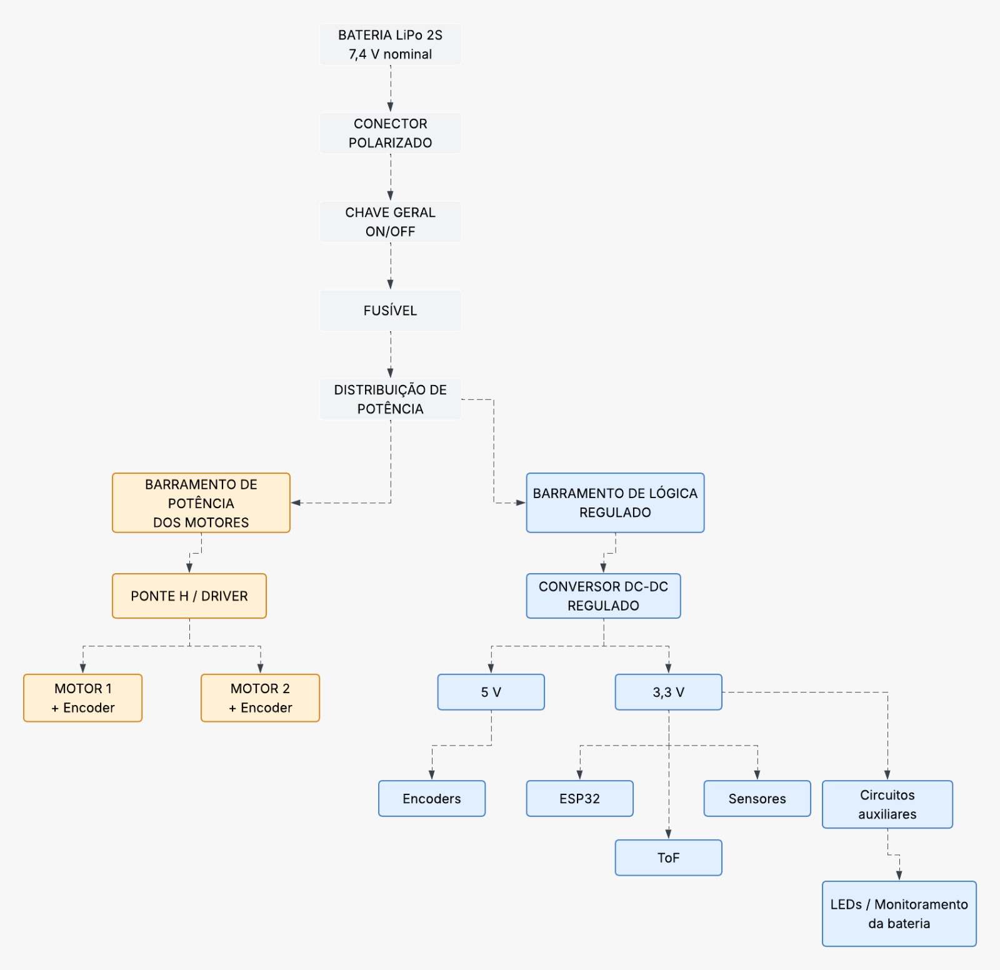
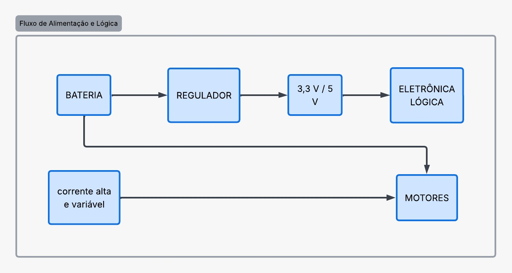
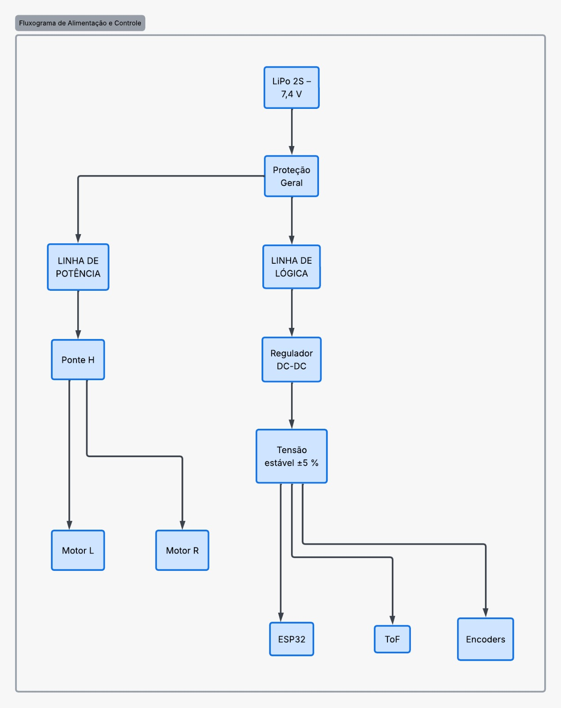

Projeto Conceitual de Energia¶
Dimensionamento Atualizado v2 — Bateria e Demanda Energética¶
Projeto Integrador 1 — 2026.2
Micromouse UnB — Grupo 1
Documento de apoio à issue: [AP5] Dimensionamento da Bateria e Proteções #19 e [AP5] Diagrama de Distribuição de Potência #18
Status do documento
Esta revisão incorpora a bateria selecionada Leão LB1500LP2, LiPo 2S, 7,4 V, 1500 mAh e 30C, além da comunicação ESP-NOW. Os consumos, as perdas e a autonomia permanecem estimativas de projeto a validar no protótipo; a seleção da bateria não representa, por si só, validação experimental do sistema completo.
1. Objetivo e escopo¶
Este documento consolida o Dimensionamento Atualizado v2 do sistema de alimentação do Micromouse UnB — Grupo 1.
O objetivo desta etapa é:
- estimar a energia necessária para 30 minutos de navegação ativa;
- comparar diferentes condições de consumo;
- comparar a demanda calculada com a bateria selecionada Leão LB1500LP2, LiPo 2S de 1500 mAh;
- estruturar conceitualmente a distribuição de energia entre os subsistemas;
- identificar as informações necessárias para o dimensionamento definitivo.
O dimensionamento apresentado nesta versão permanece conceitual quanto à demanda das cargas. A bateria já foi selecionada, mas os valores de corrente de motores, driver, microcontrolador, sensores e reguladores mantidos neste documento constituem hipóteses preliminares de engenharia, a confirmar com os componentes efetivamente utilizados.
Esses valores deverão ser posteriormente substituídos por dados provenientes dos respectivos datasheets e por medições experimentais realizadas no protótipo.
Limites desta versão
Os dados da bateria selecionada são identificados separadamente das hipóteses de consumo. As estimativas de corrente e autonomia não substituem a verificação experimental, o dimensionamento das proteções e a avaliação da integração mecânica e elétrica.
Esta revisão atualiza a seleção da bateria e a arquitetura de comunicação, preservando o estudo de demanda para 30 minutos de navegação.
2. Requisitos do projeto que orientam o cálculo¶
O dimensionamento energético foi estruturado considerando os requisitos previamente estabelecidos para o subsistema de Energia e suas interfaces com Eletrônica e Software.
| Requisito | Implicação para o sistema de Energia |
|---|---|
| RNF-ENE01 | Requisito de autonomia operacional contínua mínima de 15 minutos, com sensores e comunicação funcionando. Neste dimensionamento, adota-se um tempo mínimo considerado de 30 minutos. |
| RF-ENE02 | Realizar medição contínua da tensão do banco de baterias e disponibilizar essa informação para processamento e telemetria. |
| RF-ENE03 | Proteger a bateria contra descarga profunda, com desligamento da tração em menos de 200 ms após a detecção do limiar crítico. |
| RF-ELE01 / RF-ELE02 | Alimentar o sistema de sensoriamento de paredes em três direções e a odometria independente das duas rodas motrizes. |
| RF-SFT05 | Disponibilizar o nível/consumo da bateria como um dos parâmetros obrigatórios de telemetria. |
3. Premissas do Dimensionamento Atualizado v2¶
Para os cálculos, adotam-se os dados da bateria selecionada e as seguintes premissas de operação:
- bateria selecionada: Leão Modelismo LB1500LP2, LiPo 2S;
- capacidade nominal: 1500 mAh (1,5 Ah);
- tensão nominal do banco de baterias: 7,4 V;
- energia nominal calculada: 11,1 Wh;
- classificação de descarga informada: 30C;
- massa informada pela equipe: 75 g;
- dimensões informadas pela equipe: 70 mm de comprimento × 30 mm de largura × 17 mm de altura;
- autonomia mínima considerada: 30 minutos;
- tempo equivalente:
- dois motores DC com encoder;
- uma ponte H capaz de controlar os dois motores;
- um microcontrolador da família ESP32, com comunicação ESP-NOW pelo rádio integrado;
- três sensores de distância do tipo ToF:
- frontal;
- lateral esquerdo;
- lateral direito;
- dois encoders, um por roda motriz;
- indicadores visuais;
- circuito de monitoramento da bateria.
A telemetria é transmitida pelo ESP32 do robô via ESP-NOW, em 2,4 GHz, para um segundo ESP32 que atua como gateway receptor na bancada, conectado por USB ao computador. O envio ocorre a 1 Hz, sem depender de roteador ou associação a uma rede Wi-Fi, conforme a seção 6.1 do projeto conceitual de software.
Os valores de corrente utilizados para motores, encoders, indicadores e circuito de monitoramento são estimativas preliminares e deverão ser revisados após a escolha dos componentes definitivos.
4. Modelo de cálculo energético¶
Para cada componente, a energia consumida durante uma execução de 30 minutos é estimada pela relação:
onde:
- \(E\) = energia consumida, em joules (J);
- \(V\) = tensão de operação, em volts (V);
- \(I\) = corrente média, em ampères (A);
- \(t\) = tempo de operação, em segundos (s).
A conversão da energia de joules para watt-hora é realizada por:
Como os cálculos consideram uma execução de:
a potência média equivalente de cada cenário pode ser obtida por:
4.1 Energia nominal da bateria selecionada¶
A energia nominal da bateria é calculada a partir da tensão nominal e da capacidade:
Os 11,1 Wh são uma estimativa da energia nominal armazenada, não uma medição da energia efetivamente utilizável até o corte de descarga. A energia entregue às cargas depende das condições de operação, da capacidade real, do limiar de subtensão e das perdas do sistema.
4.2 Modelo para estimar a autonomia¶
Mantendo a hipótese de acréscimo de 15% para perdas adotada na seção 7:
A margem adicional de engenharia de 30% é utilizada no dimensionamento da capacidade para o tempo mínimo considerado de 30 minutos. Ela não é uma perda física nem uma carga adicional e, por isso, não é somada ao consumo nesta estimativa de autonomia. Os tempos obtidos pressupõem o uso da energia nominal da bateria e deverão ser substituídos ou confirmados por ensaio.
5. Três cenários de consumo adotados¶
Como as correntes das cargas ainda são tratadas como estimativas neste dimensionamento, mantêm-se três cenários de operação para avaliar sua influência na demanda energética. A seleção da bateria de 1500 mAh altera a energia disponível; ela não altera automaticamente as correntes assumidas para motores e eletrônica.
| Carga | Baixo | Nominal | Conservador |
|---|---|---|---|
| Cada motor DC (6 V) | 0,30 A | 0,50 A | 0,80 A |
| ESP32 + rádio (ESP-NOW) (3,3 V) | 80 mA | 120 mA | 200 mA |
| Cada sensor ToF (2,8 V) | 12 mA | 19 mA | 25 mA |
| Cada encoder (5 V) | 5 mA | 10 mA | 20 mA |
| Driver ponte H — lógica (3,3 V) | 1,1 mA | 1,5 mA | 2,2 mA |
| LEDs/indicadores (3,3 V) | 10 mA | 20 mA | 40 mA |
| Monitor da bateria (7,4 V) | 0,5 mA | 1,0 mA | 2,0 mA |
Consumo do ESP32 e do rádio integrado
A carga ESP32 + rádio (ESP-NOW) representa o microcontrolador embarcado com seu rádio integrado em operação; não corresponde à soma de um ESP32 com um módulo de rádio externo.
Conforme o escopo da issue #130, a atualização da nomenclatura preserva as estimativas preliminares de 80 mA, 120 mA e 200 mA, bem como os cálculos derivados. Esses valores não constituem medições específicas do consumo com ESP-NOW e deverão ser revisados com dados do componente selecionado e ensaios no protótipo.
Interpretação dos cenários
Baixo: representa uma condição de operação leve.
Nominal: constitui a principal referência utilizada no Dimensionamento Atualizado v2.
Conservador: considera correntes superiores para reduzir o risco de subdimensionamento enquanto os componentes definitivos ainda não são conhecidos.
6. Cálculo energético por cenário¶
6.1 Cenário baixo¶
| Componente | V | I total (A) | t (s) | E (J) | E (Wh) |
|---|---|---|---|---|---|
| 2 motores DC | 6,0 | 0,600 | 1800 | 6480,00 | 1,8000 |
| ESP32 + rádio (ESP-NOW) | 3,3 | 0,080 | 1800 | 475,20 | 0,1320 |
| 3 sensores ToF | 2,8 | 0,036 | 1800 | 181,44 | 0,0504 |
| 2 encoders | 5,0 | 0,010 | 1800 | 90,00 | 0,0250 |
| Driver ponte H — lógica | 3,3 | 0,0011 | 1800 | 6,53 | 0,0018 |
| LEDs/indicadores | 3,3 | 0,010 | 1800 | 59,40 | 0,0165 |
| Monitor da bateria | 7,4 | 0,0005 | 1800 | 6,66 | 0,0019 |
Energia total:
ou:
A potência média correspondente é:
6.2 Cenário nominal¶
| Componente | V | I total (A) | t (s) | E (J) | E (Wh) |
|---|---|---|---|---|---|
| 2 motores DC | 6,0 | 1,000 | 1800 | 10800,00 | 3,0000 |
| ESP32 + rádio (ESP-NOW) | 3,3 | 0,120 | 1800 | 712,80 | 0,1980 |
| 3 sensores ToF | 2,8 | 0,057 | 1800 | 287,28 | 0,0798 |
| 2 encoders | 5,0 | 0,020 | 1800 | 180,00 | 0,0500 |
| Driver ponte H — lógica | 3,3 | 0,0015 | 1800 | 8,91 | 0,0025 |
| LEDs/indicadores | 3,3 | 0,020 | 1800 | 118,80 | 0,0330 |
| Monitor da bateria | 7,4 | 0,0010 | 1800 | 13,32 | 0,0037 |
Energia total:
ou:
A potência média correspondente é:
6.3 Cenário conservador¶
| Componente | V | I total (A) | t (s) | E (J) | E (Wh) |
|---|---|---|---|---|---|
| 2 motores DC | 6,0 | 1,600 | 1800 | 17280,00 | 4,8000 |
| ESP32 + rádio (ESP-NOW) | 3,3 | 0,200 | 1800 | 1188,00 | 0,3300 |
| 3 sensores ToF | 2,8 | 0,075 | 1800 | 378,00 | 0,1050 |
| 2 encoders | 5,0 | 0,040 | 1800 | 360,00 | 0,1000 |
| Driver ponte H — lógica | 3,3 | 0,0022 | 1800 | 13,07 | 0,0036 |
| LEDs/indicadores | 3,3 | 0,040 | 1800 | 237,60 | 0,0660 |
| Monitor da bateria | 7,4 | 0,0020 | 1800 | 26,64 | 0,0074 |
Energia total:
ou:
A potência média correspondente é:
No cenário nominal, os dois motores respondem por aproximadamente 89% da energia estimada.
Esse resultado demonstra que a escolha dos motores e, principalmente, a corrente real durante a navegação constituem as variáveis de maior impacto no dimensionamento definitivo do sistema de Energia.
7. Perdas e margem de engenharia¶
A energia calculada diretamente nas cargas não considera todas as perdas presentes no sistema de alimentação.
Entre essas perdas estão:
- reguladores de tensão;
- conversores DC-DC;
- ponte H;
- trilhas da PCB;
- cabeamento;
- conectores;
- dispositivos de proteção.
Enquanto as perdas reais desses componentes não forem caracterizadas, o Dimensionamento Atualizado v2 mantém provisoriamente um acréscimo de 15% sobre a energia das cargas para representar as perdas do sistema.
Após essa correção, é aplicada uma margem adicional de engenharia de 30%, destinada a absorver as incertezas associadas aos componentes ainda não definidos.
Margens adotadas
Os valores de 15% para perdas e 30% para margem de engenharia são hipóteses desta etapa conceitual.
Eles deverão ser reavaliados no dimensionamento definitivo utilizando as eficiências reais dos conversores, do driver e dos demais componentes selecionados.
| Cenário | Energia nas cargas (Wh) | Após +15% de perdas (Wh) | Após +30% de margem (Wh) |
|---|---|---|---|
| Baixo | 2,028 | 2,332 | 3,031 |
| Nominal | 3,367 | 3,872 | 5,034 |
| Conservador | 5,412 | 6,224 | 8,091 |
Para o cenário conservador:
8. Conversão para capacidade da bateria LiPo 2S¶
Considerando uma bateria LiPo 2S com tensão nominal de:
a capacidade equivalente pode ser determinada por:
Para converter o resultado para miliampère-hora:
Aplicando essa relação aos três cenários:
| Cenário | Energia de projeto (Wh) | Capacidade equivalente em 7,4 V |
|---|---|---|
| Baixo | 3,031 | ≈ 410 mAh |
| Nominal | 5,034 | ≈ 680 mAh |
| Conservador | 8,091 | ≈ 1093 mAh |
Resultado-chave
O cenário conservador resulta em uma capacidade mínima preliminar de aproximadamente 1093 mAh, já considerando as hipóteses de perdas e margem de engenharia.
Esse valor é a capacidade mínima estimada para a demanda adotada, não a capacidade da bateria selecionada. A Leão LB1500LP2 de 1500 mAh supera esse mínimo sob as hipóteses deste dimensionamento; a autonomia e a compatibilidade do conjunto deverão ser verificadas no protótipo.
9. Bateria selecionada e comparação com o dimensionamento¶
A bateria selecionada pela equipe é a Leão Modelismo LB1500LP2, LiPo 2S, 7,4 V, 1500 mAh e 30C. Essa seleção substitui a faixa de estudo e a referência intermediária utilizadas na versão anterior.
9.1 Características e origem dos dados¶
| Parâmetro | Valor adotado | Origem / situação |
|---|---|---|
| Marca e modelo | Leão Modelismo LB1500LP2 | Identificação confirmada pela equipe; modelo também descrito na página comercial |
| Química | LiPo | Informado pela equipe e pela página comercial |
| Configuração | 2S — duas células em série | Informado pela equipe e pela página comercial |
| Tensão nominal | 7,4 V | Informado pela equipe e pela página comercial |
| Capacidade nominal | 1500 mAh (1,5 Ah) | Informado pela equipe e pela página comercial |
| Energia nominal | 11,1 Wh | Calculado: 7,4 V × 1,5 Ah |
| Classificação de descarga adotada | 30C | Informado pela equipe; não se adota a classificação de pico anunciada sem confirmação adicional |
| Corrente correspondente a 30C | 45 A | Calculado: 1,5 Ah × 30; valor associado à classificação declarada, não medido no projeto |
| Massa | 75 g | Informado pela equipe |
| Dimensões — comprimento × largura × altura | 70 × 30 × 17 mm | Informado pela equipe |
| Tensão máxima de carga de referência | 8,4 V | Referência geral para LiPo convencional 2S, a 4,2 V por célula; ver instruções técnicas da Traxxas |
| Conector principal | T-Deans anunciado para o modelo | Conferir o conector e a polaridade da unidade efetivamente utilizada |
| Conector de balanceamento | Não confirmado | Conferir na unidade utilizada |
| Carregador e corrente máxima de carga | Não informados / não confirmados | Identificar o equipamento e consultar a especificação aplicável à bateria |
| BMS ou proteção integrada | Não confirmado | Verificar na unidade e na documentação; não presumir sua presença |
Rastreabilidade dos dados físicos
A página comercial consultada informa 70 g e 70 × 30 × 16 mm. Este documento adota os 75 g e 70 × 30 × 17 mm fornecidos pela equipe para a unidade do projeto. A diferença deve ser verificada na conferência dimensional e de massa; os valores informados pela equipe não são apresentados como dados de um datasheet oficial.
9.2 Comparação com a demanda de projeto¶
| Cenário | Energia de projeto para 30 min, com perdas e margem (Wh) | Capacidade mínima estimada em 7,4 V | Capacidade selecionada | Energia nominal selecionada |
|---|---|---|---|---|
| Baixo | 3,031 | ≈ 410 mAh | 1500 mAh | 11,1 Wh |
| Nominal | 5,034 | ≈ 680 mAh | 1500 mAh | 11,1 Wh |
| Conservador | 8,091 | ≈ 1093 mAh | 1500 mAh | 11,1 Wh |
A energia nominal da bateria selecionada corresponde a aproximadamente 1,37 vezes a energia de projeto do cenário conservador para 30 minutos:
Essa comparação indica reserva energética no modelo adotado. Não comprova, isoladamente, a capacidade real, a integração mecânica, a atuação das proteções ou o atendimento em pista.
9.3 Autonomia teórica por cenário¶
Aplicando o modelo da seção 4.2, com 15% de acréscimo para perdas, sem tratar a margem de engenharia como consumo:
| Cenário | Potência média das cargas (W) | Potência estimada na bateria, com +15% (W) | Autonomia teórica com 11,1 Wh |
|---|---|---|---|
| Baixo | 4,055 | 4,663 | ≈ 142,8 min |
| Nominal | 6,734 | 7,744 | ≈ 86,0 min |
| Conservador | 10,824 | 12,448 | ≈ 53,5 min |
Os cálculos usam os valores antes do arredondamento apresentado nas tabelas. Os três cenários superam teoricamente o tempo mínimo considerado de 30 minutos, mas utilizam a energia nominal integral e correntes estimadas. A autonomia real depende do consumo durante o percurso, da energia utilizável até o corte, da capacidade efetiva e das perdas reais.
9.4 Integração ao robô¶
A montagem deverá considerar a massa informada de 75 g, as dimensões de 70 × 30 × 17 mm, a fixação no chassi, o acesso aos conectores e o espaço necessário para os cabos. O encaixe e a distribuição de massa deverão ser conferidos no conjunto montado.
10. Capacidade energética e capacidade de fornecimento de corrente¶
Os cálculos anteriores verificam a energia estimada para o requisito de autonomia. A capacidade de fornecer corrente também precisa ser compatível com partidas, acelerações, frenagens, reversões e eventual travamento dos motores.
A corrente correspondente à classificação de descarga é calculada por:
Para a bateria selecionada, com 1,5 Ah e 30C:
Os 45 A são um valor calculado a partir da capacidade nominal e da classificação de descarga informada. Não representam o consumo do robô nem uma corrente validada por ensaio no projeto. A corrente efetivamente solicitada depende das cargas e de suas condições de operação.
Não se adota neste dimensionamento uma corrente de pico de 60C: embora apareça em anúncios do modelo, sua duração e aplicabilidade à unidade utilizada não foram confirmadas.
Dimensionamento das proteções e do caminho de potência
Os 45 A não definem a corrente do fusível nem a corrente admissível da ponte H, dos fios, conectores ou trilhas. Cada elemento deverá ser dimensionado para a corrente de operação e os transitórios das cargas, respeitando os limites dos componentes efetivamente utilizados.
O C-rating mínimo exigido pelo robô deverá ser verificado a partir da corrente máxima solicitada à bateria, incluindo os cenários de partida e travamento dos motores e o consumo da eletrônica.
Validações pendentes
Confirmar as correntes de partida e stall dos motores e os limites dos reguladores, driver, conectores, condutores e trilhas. Esses dados são necessários para validar a compatibilidade da bateria selecionada e dimensionar o fusível e as demais proteções.
11. Arquitetura elétrica conceitual associada ao dimensionamento¶
Limite do dimensionamento e alimentação do gateway
O dimensionamento da bateria considera as cargas embarcadas no robô, incluindo o ESP32 emissor e seu rádio integrado para comunicação ESP-NOW.
O segundo ESP32, que atua como gateway receptor na bancada, é alimentado pela porta USB do computador e não integra a demanda da bateria do robô, conforme a arquitetura de comunicação do documento 4.4.
A arquitetura elétrica deverá separar a linha de potência destinada aos motores da alimentação utilizada pela eletrônica lógica e pelos sensores.
Essa separação tem como objetivo reduzir a propagação de:
- picos de corrente;
- ruído elétrico;
- transitórios de comutação;
- quedas temporárias de tensão;
para os circuitos mais sensíveis do robô.
A estrutura conceitual pode ser resumida da seguinte maneira:
Leão LB1500LP2 — LiPo 2S — 7,4 V — 1500 mAh
│
▼
Conector polarizado
│
▼
Chave geral
│
▼
Fusível
│
▼
Distribuição de potência
│
├──► Barramento de potência ──► Ponte H ──► Motores
│
└──► Barramento regulado ──► ESP32 + sensores + encoders
11.1 Arquitetura geral do sistema de alimentação¶
O diagrama a seguir apresenta o caminho conceitual completo da energia no Micromouse.
A bateria selecionada Leão LB1500LP2, LiPo 2S de 7,4 V e 1500 mAh, alimenta inicialmente os dispositivos gerais de conexão, seccionamento e proteção:
- conector polarizado;
- chave geral;
- fusível.
Somente após essa etapa ocorre a distribuição da energia para os dois grandes grupos de cargas:
- barramento de potência dos motores;
- barramento regulado de lógica e sensoriamento.

Figura 1 — Arquitetura conceitual detalhada do sistema de alimentação do Micromouse.
Fonte: elaboração da equipe do projeto Micromouse UnB — Grupo 1 (2026).
Tensões indicadas no diagrama
Os níveis intermediários de 5 V e 3,3 V apresentados são conceituais nesta etapa.
A tensão nominal de 7,4 V da LiPo 2S é mantida. Para verificar a compatibilidade dos componentes ligados à bateria e dos reguladores, considerar também 8,4 V como tensão máxima de carga de referência da LiPo convencional 2S. Os níveis de 5 V e 3,3 V deverão ser confirmados com os componentes efetivamente utilizados.
11.2 Separação entre potência e lógica e imunidade a transitórios¶
Os motores representam a principal carga energética do sistema e apresentam comportamento elétrico altamente variável.
Durante eventos como:
partida → aceleração → frenagem → mudança de sentido → eventual travamento
podem ocorrer correntes significativamente superiores à corrente média de navegação.
Por esse motivo, a eletrônica lógica deverá utilizar uma alimentação regulada dedicada, enquanto os motores permanecem associados ao barramento de potência de corrente elevada e variável.

Figura 2 — Separação conceitual entre alimentação lógica regulada e cargas de potência.
Fonte: elaboração da equipe do projeto Micromouse UnB — Grupo 1 (2026).
Essa separação tem como objetivo reduzir a propagação dos transitórios produzidos pelos motores para o ESP32 e para os sensores.
No projeto definitivo deverão ser dimensionados:
- regulador dedicado para a eletrônica de controle;
- capacitores de desacoplamento próximos aos circuitos integrados;
- capacitor de maior capacidade próximo ao driver dos motores;
- caminhos separados para correntes de potência e lógica;
- retorno de corrente adequadamente organizado;
- trilhas, conectores e condutores compatíveis com a corrente máxima prevista.
O objetivo é manter a alimentação lógica dentro da tolerância estabelecida mesmo durante transitórios causados pelos motores.
11.3 Representação simplificada do fluxo de alimentação e controle¶
A representação seguinte sintetiza a arquitetura elétrica em dois ramos principais após a etapa de proteção geral.
No ramo de potência:
proteção → linha de potência → ponte H → motores
No ramo lógico:
proteção → linha de lógica → regulador DC-DC → ESP32, sensores e encoders

Figura 3 — Fluxograma simplificado de alimentação, proteção e distribuição entre potência e lógica.
Fonte: elaboração da equipe do projeto Micromouse UnB — Grupo 1 (2026).
Na representação, o bloco Proteção Geral sintetiza os dispositivos de proteção e seccionamento localizados antes da divisão entre os barramentos.
Os valores definitivos de:
- tensão;
- corrente;
- reguladores;
- proteções;
- condutores;
serão consolidados após a seleção dos dispositivos reais e a substituição das hipóteses desta versão por dados de datasheet e ensaios.
11.4 Monitoramento da bateria¶
A tensão da bateria Leão LB1500LP2 de 7,4 V nominais deverá ser monitorada pelo sistema embarcado. O circuito de medição deverá comportar a tensão máxima de carga de referência de 8,4 V, correspondente a uma LiPo convencional 2S, e respeitar o limite de entrada do ADC ou do circuito de monitoramento escolhido. Essa referência geral consta nas instruções técnicas da Traxxas; não substitui a documentação específica da unidade utilizada.
Entre as alternativas conceituais estão:
- divisor resistivo conectado ao ADC do microcontrolador;
- circuito integrado dedicado de monitoramento;
- sensor combinado de tensão e corrente.
O sistema deverá disponibilizar ao firmware informações suficientes para:
- medir a tensão da bateria;
- registrar o tempo de funcionamento;
- estimar o estado energético;
- alimentar a telemetria;
- identificar condição de subtensão;
- comandar o desligamento da tração quando necessário.
O mecanismo definitivo deverá atender ao requisito de desativação da tração em menos de 200 ms após a identificação do limiar crítico de subtensão. A capacidade de 1500 mAh, isoladamente, não define esse limiar: seu valor e a atuação do corte deverão ser confirmados conforme a especificação aplicável e os testes do projeto. A presença de BMS ou proteção integrada à bateria permanece não confirmada.
12. Dados necessários para o dimensionamento definitivo¶
Com a bateria Leão LB1500LP2 selecionada, os dados conhecidos estão registrados na seção 9.1. Para consolidar o dimensionamento, ainda é necessário confirmar as características dos componentes utilizados e substituir as estimativas de consumo por dados de datasheets e medições.
A tabela abaixo relaciona as verificações que permanecem necessárias.
| Item | Informações necessárias |
|---|---|
| Motores DC — prioridade máxima | Modelo exato, tensão nominal, corrente sem carga, corrente nominal sob carga, corrente de stall, RPM, relação de redução e torque. |
| Encoders | Modelo ou identificação do encoder integrado, tensão de alimentação, tipo de saída e consumo. |
| Driver / ponte H | Modelo, tensão VM, tensão lógica, corrente contínua por canal, corrente de pico, RDS(on) ou queda de tensão e limites térmicos. |
| Microcontrolador / placa | Modelo exato da placa, incluindo a variante específica do ESP32 utilizada, e consumo do conjunto microcontrolador e rádio integrado durante a operação com ESP-NOW. |
| Sensores de distância | Modelo, quantidade e identificação se são sensores isolados ou módulos/breakouts. |
| Outros sensores | IMU, giroscópio, sensor de corrente/tensão ou qualquer sensor adicional. |
| Reguladores / conversores | Modelo, tensão de entrada, tensão de saída, corrente máxima e curva de eficiência. |
| Bateria selecionada — Leão LB1500LP2 | Já informados: LiPo 2S, 7,4 V, 1500 mAh, 30C, 75 g e 70 × 30 × 17 mm. Confirmar os dados da unidade, o conector e a polaridade, a corrente máxima de carga, o conector de balanceamento, a capacidade efetiva e a energia utilizável até o corte. |
| BMS / proteção | Confirmar se há proteção integrada ou externa; se utilizada, identificar modelo, corrente máxima, limites de sobrecarga/subtensão e consumo próprio. Não presumir a existência de BMS. |
| Monitoramento da bateria | Divisor resistivo, CI monitor, sensor de corrente/tensão ou arquitetura escolhida. |
| LEDs e buzzer | Quantidade e corrente prevista de cada indicador ou atuador auxiliar. |
| Módulos adicionais | Memória, cartão SD, conversores de nível, display ou qualquer carga adicional efetivamente instalada no robô. A arquitetura ESP-NOW adotada utiliza o rádio integrado do ESP32 e não prevê um módulo de rádio separado no robô. |
| Conectores e fiação | Tipo de conector da bateria, bitola e comprimento aproximado dos condutores de potência. |
| Fusível | Dimensionar e validar a partir das correntes das cargas e dos limites de motores, driver, conectores e condutores; não adotar os 45 A da classificação da bateria como valor do fusível. |
| Carregador e recarga | Identificar o carregador, a corrente de carga permitida pela bateria e a configuração utilizada; medir o tempo real de recarga. Esses dados ainda não foram informados. |
Ordem recomendada de definição dos componentes¶
A sequência abaixo representa a dependência técnica entre as definições dos componentes. Como a bateria já foi selecionada, sua compatibilidade deverá ser verificada à medida que os dados das cargas forem confirmados:
MOTORES
↓
DRIVER
↓
PLACA ESP32
↓
SENSORES
↓
REGULADORES
↓
VALIDAÇÃO DA BATERIA SELECIONADA
Os motores possuem prioridade porque representam a principal parcela do consumo e determinam parte significativa das exigências de corrente do restante do sistema.
13. Síntese do Dimensionamento Atualizado v2¶
| Parâmetro | Resultado / situação |
|---|---|
| Autonomia mínima considerada | 30 min / 1800 s / 0,5 h |
| Bateria selecionada | Leão Modelismo LB1500LP2 — LiPo 2S |
| Tensão nominal | 7,4 V |
| Capacidade nominal | 1500 mAh / 1,5 Ah |
| Energia nominal calculada da bateria | 11,1 Wh |
| Classificação de descarga informada | 30C |
| Corrente correspondente à classificação declarada | 45 A, calculados; não são o consumo do robô nem o valor do fusível |
| Massa informada pela equipe | 75 g |
| Dimensões informadas — comprimento × largura × altura | 70 × 30 × 17 mm |
| Comunicação embarcada | ESP-NOW pelo rádio integrado do ESP32; gateway alimentado por USB na bancada |
| Energia — cenário baixo para 30 min | 2,028 Wh antes das margens |
| Energia — cenário nominal para 30 min | 3,367 Wh antes das margens |
| Energia — cenário conservador para 30 min | 5,412 Wh antes das margens |
| Hipótese de perdas | +15% |
| Margem adicional de engenharia para dimensionamento | +30% após as perdas |
| Energia conservadora de projeto para 30 min | ≈ 8,091 Wh |
| Capacidade mínima estimada no cenário conservador | ≈ 1093 mAh |
| Relação entre energia nominal disponível e demanda conservadora de projeto | ≈ 1,37 vezes |
| Autonomia teórica nominal | ≈ 86,0 min, com +15% para perdas e uso da energia nominal integral |
| Autonomia teórica no cenário conservador | ≈ 53,5 min, nas mesmas hipóteses |
| Principais validações pendentes | Consumo real, energia utilizável, autonomia, correntes transitórias, proteções, conexões e integração mecânica |
14. Conclusão¶
Esta revisão registra a seleção da bateria Leão Modelismo LB1500LP2, LiPo 2S, 7,4 V, 1500 mAh e 30C, com energia nominal calculada de 11,1 Wh, massa informada de 75 g e dimensões informadas de 70 × 30 × 17 mm. Também alinha a comunicação embarcada à arquitetura ESP-NOW com gateway USB na bancada, cujo consumo não integra a bateria do robô.
Mantendo as hipóteses de consumo, o acréscimo de 15% para perdas e a margem de engenharia de 30%, a necessidade energética conservadora para 30 minutos passa a ser de aproximadamente 8,091 Wh, equivalente a uma capacidade mínima de 1093 mAh em 7,4 V.
A bateria selecionada possui capacidade superior a esse mínimo e energia nominal correspondente a aproximadamente 1,37 vezes a demanda conservadora de projeto. No modelo de autonomia, com 15% de acréscimo para perdas e utilização da energia nominal integral, obtêm-se cerca de 86,0 minutos no cenário nominal e 53,5 minutos no cenário conservador.
Esses resultados indicam atendimento teórico ao requisito de autonomia nas condições modeladas. A autonomia real e a compatibilidade elétrica e mecânica ainda deverão ser confirmadas no protótipo; a seleção da bateria não transforma as estimativas de consumo em medições.
A classificação informada de 30C corresponde ao cálculo de 45 A, mas não substitui a verificação das correntes das cargas nem define os limites do driver, fios, conectores, trilhas ou fusível.
Para consolidar o dimensionamento, deverão ser verificados:
- consumo real do conjunto e autonomia até o limiar de corte adotado;
- capacidade efetiva e energia utilizável da bateria;
- correntes de partida e stall dos motores;
- limites e perdas dos reguladores e do driver;
- conectores, polaridade, condutores e trilhas;
- fusível e proteções contra sobrecorrente e subtensão;
- presença ou ausência de BMS ou proteção integrada;
- fixação, espaço disponível e distribuição de massa no chassi;
- carregador, corrente de carga permitida e tempo real de recarga.
O documento passa, portanto, a avaliar uma bateria selecionada, mantendo explícitas as hipóteses e as validações que ainda faltam para o dimensionamento definitivo.
15. Referências e origem dos dados¶
- Documento de Requisitos do Projeto — Micromouse (PI1 2026.2 — Grupo 1).
- Termo de Abertura do Projeto (TAP) — Micromouse UnB — Grupo 1.
- Issue
[AP5] Dimensionamento da Bateria e Proteções #19. - Issue
[AP5] Diagrama de Distribuição de Potência #18. - Arquivo
4.2 - Projeto conceitual de energia.md. - 4.4 — Projeto conceitual de software, seção 6.1 — Visão Geral da Arquitetura de Comunicação.
- Issue #130 — EAP 4.1.1: Alinhar o 4.2 com a comunicação ESP-NOW.
- Página comercial da Leão LB1500LP2 — Action Modelismo. Fonte comercial para identificação e características anunciadas; não equivale a um datasheet oficial. Divergências de massa e dimensões estão registradas na seção 9.1.
- Dados fornecidos pela equipe do projeto para a unidade selecionada: modelo Leão LB1500LP2; LiPo 2S; 1500 mAh; 7,4 V; 30C; 75 g; comprimento de 70 mm, largura de 30 mm e altura de 17 mm.
- Instruções técnicas de baterias LiPo — Traxxas. Referência geral para o limite de 4,2 V por célula da LiPo convencional e para o cálculo da corrente a partir do C-rating; não substitui a documentação específica da Leão.